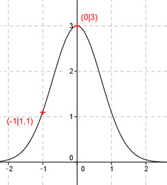
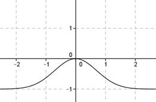

Aufgabe 129 Ergänzen Sie die Wertetabelle für den Graphen: y = 3 * e-x2 x -1 0 y 1,1 3 y = f(-1) = 3 * e-(-1)2 = 3 * e-1 = 1,1 gerundet  An welchen Stellen x die Funktion den Wert 3 annimmt, ist durch Probieren zu ermitteln. Abgelesen: Es ist eine Stelle. Für jeden weiteren Funktionswert muss eine Näherungsrechnung durchgeführt werden, hier mit der Regula falsi. Regula falsi: x0 = gesuchte Nullstelle x1 * |y(x2)| + x2 * |y(x1)| x0 = ------------------------------ |y(x1)| + |y(x2)| f(x) = 3 eingesetzt: 3 = 3 * e-x2 |:3 1 = e-x2 |-1 e-x2 - 1 = 0 Als Funktion: y = e-x2 - 1 Die Nullstellen dieser Funktion (y = 0) entsprechen den gesuchten Werten für x.  Abgelesen: Nullstelle zwischen -0,3 und 0,2 Nullstelle x0 zwischen -0,3 und 0,2 mit Excel ermittelt: A B C D E F G H I J -0,3 0,2 0,0408 0,0942 -0,0122 0,0188 0,0066 0,1350 0,0488 0,0024 -0,3 0,0488 0,0024 0,0942 -0,0007 0,0046 0,0039 0,0966 0,0402 0,0016 -0,3 0,0402 0,0016 0,0942 -0,0005 0,0038 0,0033 0,0958 0,0345 0,0012 -0,3 0,0345 0,0012 0,0942 -0,0004 0,0032 0,0029 0,0954 0,0303 0,0009 Die gesucht Nullstelle liegt bei x0 = 0 gerundet. Weitere Erläuterungen zur Tabelle siehe Aufgabe 101.